98. Piston, Connecting Rod, and Bearing Installation
Piston, Connecting Rod, and Bearing Installation
Tools Required
* EN 46121 Connecting Rod Guide Pin Set
* J 8037 Ring Compressor
* J 39946 Crankshaft Socket - 4.0L and 4.6L
* J 43690 Rod Bearing Clearance Checking Tool
* J 43690-100 Rod Bearing Clearance Checking Tool - Adapter Kit
* J 45059 Angle Meter
Piston and Connecting Rod Assembly Procedure
1. Rotate the crankshaft using the J 39946 in order to align the crankshaft connecting rod journal being serviced to BDC.
2. Liberally lubricate the cylinder walls, piston rings and piston skirts with clean engine oil.
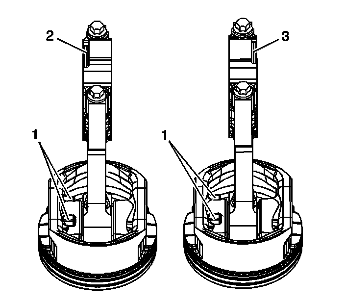
3. Select the correctly numbered piston/connecting rod assembly for the cylinder. Indication features showing proper piston orientation are located on the bottom of the piston and connecting rod. Ensure the connecting rod bearing tang notches in the connecting rod bearing bore are aligned to the same side.
* The locator lugs (1) on the bottom of the piston are oriented towards the front of engine.
* The notch (2) on the left piston assembly connecting rod cap is oriented towards the front of the engine. The piston locator lugs (1) and the connecting rod cap notch (2) in the same orientation.
* The notch (3) on the right piston assembly connecting rod cap is oriented towards the rear of the engine. The piston locator lugs (1) and the connecting rod cap notch (3) in the opposing orientation.
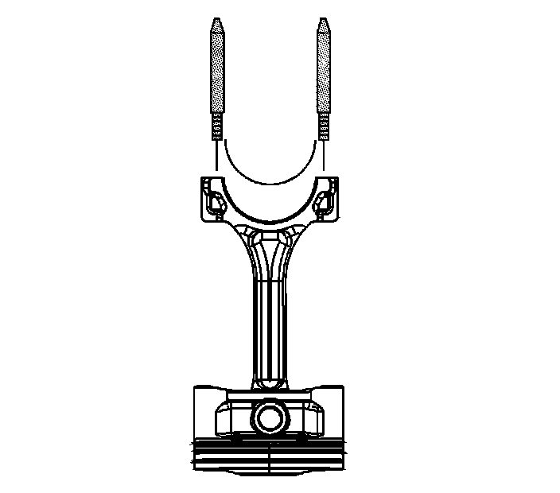
Important: Connecting rod bearings that have been used in a running engine, must be replaced with NEW connecting rod bearings for reassembly.
4. Install the connecting rod bearing into the connecting rod.
5. Install the EN 46121 into the connecting rod bolt holes.
6. Compress the piston rings using the J 8037 or equivalent.
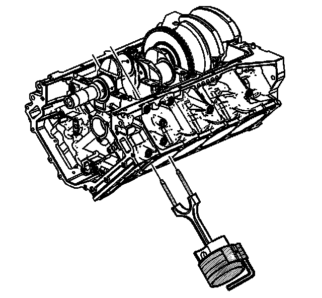
Important: Extreme care must be exercised when installing the piston and connecting rod in order to ensure the connecting rod does not scrape or nick the cylinder bore or the crankshaft journal surfaces.
7. Using both hands, slowly guide the piston and connecting rod assembly into the cylinder from the top and bottom of the cylinder. DO NOT allow the connecting rod to contact the cylinder wall.
8. When the J 8037 contacts the deck surface, gently tap the piston into the cylinder using the handle end of a dead-blow hammer. Guide the connecting rod onto the crankshaft bearing journal using the EN 46121 while taping the piston into the cylinder.

9. Remove the EN 46121 from the connecting rod bolt holes.
Connecting Rod Bearing Clearance Measurement Procedure - Using Plastic Gaging
Important: Connecting rod bearings that have been used in a running engine, must be replaced with NEW connecting rod bearings for reassembly.
1. Before final assembly it is important to check the clearance of the new connecting rod bearings.
2. Place a length of fresh, room temperature plastic gaging material all the way across the entire connecting rod bearing journal.
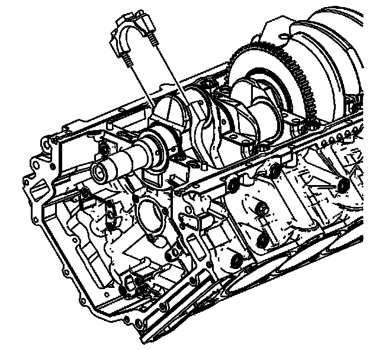
3. Install the connecting rod end cap on its original connecting rod making sure the bearing lock tangs are aligned on the same side of the rod.
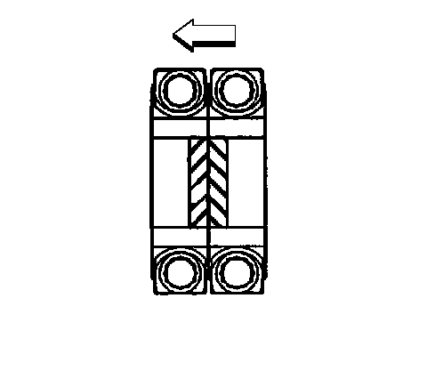
4. When properly installed, the connecting rod bearing cap notches should be paired, as shown, on the crankpin.
Notice: Refer to Fastener Notice (Fastener Notice) .
Important: Reuse the old connecting rod bolts ONLY for measuring the connecting rod bearing clearance.
5. Lubricate connecting rod bolts with engine oil and install in the connecting rod.
Tighten the connecting rod bolts to 30 N.m (22 lb ft).
6. Loosen the connecting rod bolts until the torque reading is zero.
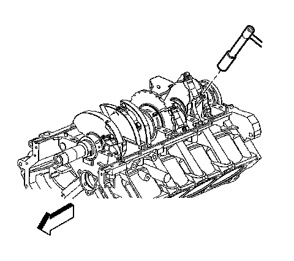
7. Re-tighten the connecting rod bolts.
1. First Pass
Tighten the connecting rod bolts to 25 N.m (18 lb ft).
2. Final Pass
Tighten the connecting rod bolts an additional 110 degrees using the J 45059 .
8. Allow the assembly to sit for at least 2 minutes.
9. Remove the connecting rod cap bolts.
10. Remove the connecting rod cap.
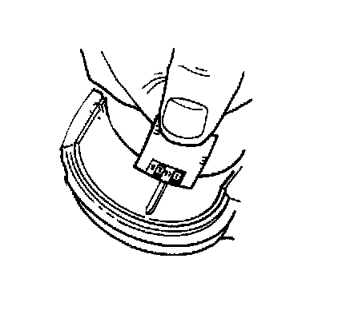
11. Determine the connecting rod bearing clearance by comparing the width of the flattened plastic gaging material at its widest point with the graduation on the gauging material container.
12. Compare the measurements with the engine mechanical specifications. Refer to Engine Mechanical Specifications (Specifications) .
13. If the new bearings do not provide the proper crankshaft to bearing clearance, re-measure the crankshaft journals for the correct specified size and check to make sure you have the correct new bearings. If the crankshaft journals are incorrectly sized, replace the crankshaft. No crankshaft machining is permitted and undersized bearings are not available.
14. Clean the plastic gaging material from the connecting rod bearing and crankshaft connecting rod bearing journal using a soft lint-free cloth.
Connecting Rod Clearance Measurement Procedure - Using J 43690 and J 43690-100
The J 43690 and the J 43690-100 have been developed as a more accurate method to measure connecting rod bearing clearances. The instructions below provide an overview of tool set-up and usage. For more detailed information, refer to the tool instruction sheets as supplied by the tool manufacturer.
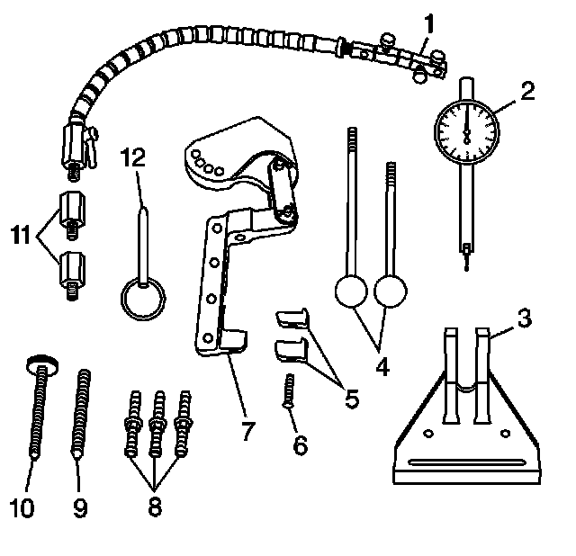
J 43690 Rod Bearing Clearance Checking Tool
* J 43690-20 Swivel Base (1)
* J 43690-19 Dial Indicator (2)
* J 43690-2 Base (3)
* J 43690-5, -6 Handle (4)
* J 43690-10, -11 Foot (5)
* 280307 Screw (6)
* J 43690-1 Pivot Arm Assembly (7)
* J 43690-3, -7, -8 Screws (8)
* 280319 Screw (9)
* 280311 Screw (10)
* J 43690-17, -18 Adapter (11)
* 280310 Pin (12)
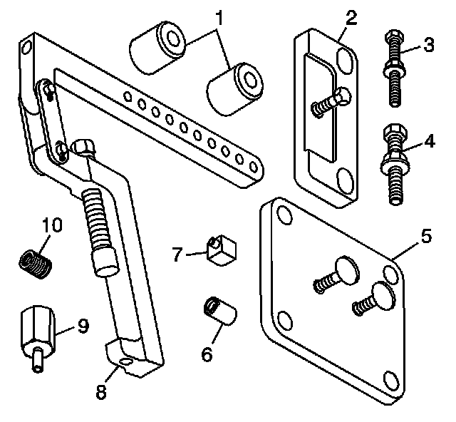
J 43690-100 Rod Bearing Clearance Tool - Adapter Kit
* J 43690-104 Spacer (1)
* J 43690-105 Retainer Plate (2)
* 505478 Bolt (3)
* 511341 Bolt (4)
* J 43690-106 Retainer Plate (5)
* J 43690-107 Cap (6)
* J 43690-102 Foot (7)
* J 43690-101 Pivot Arm Assembly (8)
* J 43690-103 Adapter (9)
* 505439 Adapter (10)
1. Install the connecting rod end cap on its original connecting rod making sure the bearing lock tangs are aligned on the same side of the rod.
2. When properly installed, the connecting rod bearing cap notches should be paired, as shown, on the crankpin.
Notice: Refer to Fastener Notice (Fastener Notice) .
Important: Reuse the old connecting rod bolts ONLY for measuring the connecting rod bearing clearance.
3. Lubricate connecting rod bolts with engine oil and install in the connecting rod.
Tighten the connecting rod bolts to 30 N.m (22 lb ft).
4. Loosen the connecting rod bolts until the torque reading is zero.
5. Re-tighten the connecting rod bolts.
1. First Pass
Tighten the connecting rod bolts to 25 N.m (18 lb ft).
2. Final Pass
Tighten the connecting rod bolts an additional 110 degrees using the J 45059 .
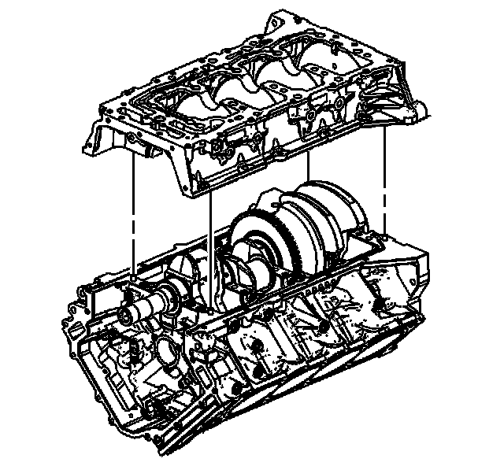
6. Align the lower crankcase with the dowel pins in the upper crankcase.
7. Install the lower crankcase onto the upper crankcase slowly until feeling a positive stop.
8. Inspect the upper-to-lower crankcase joint in order to make sure the lower crankcase is fully seated on the cylinder block.
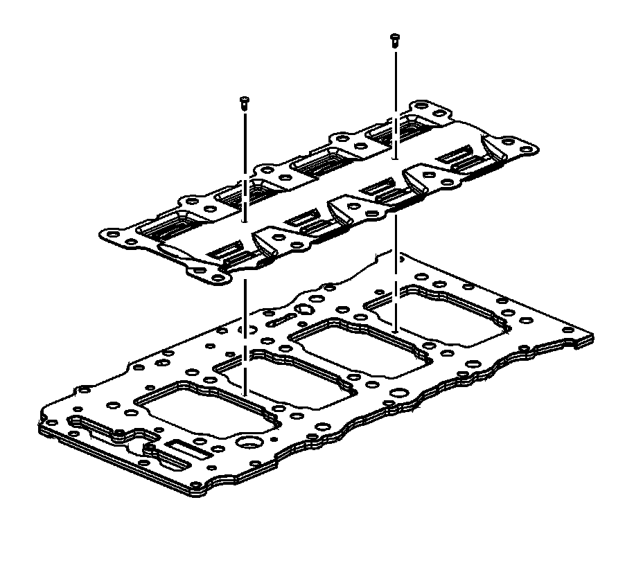
9. In order to gain access for the J 43690 and the J 43690-100 remove the oil scraper plate from the old oil manifold plate, if fastened into place.
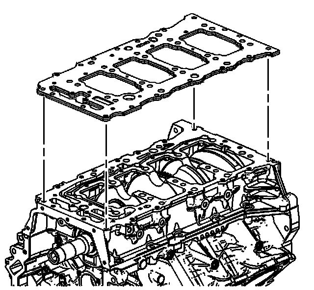
10. Install the old oil manifold plate.
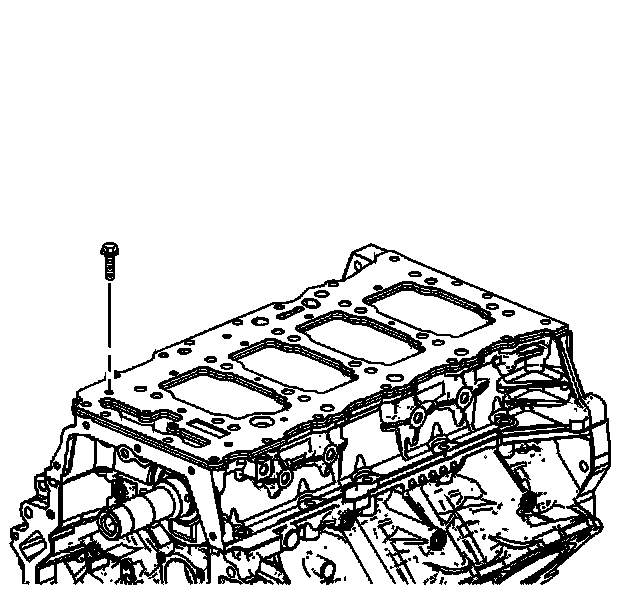
11. Install the old oil manifold plate bolts.
Tighten the old oil manifold plate bolts to 10 N.m (89 lb in).
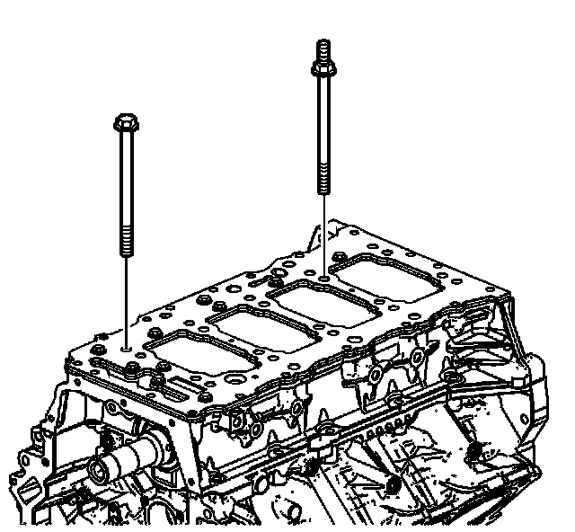
12. Install the lower crankcase main bearing bolts.
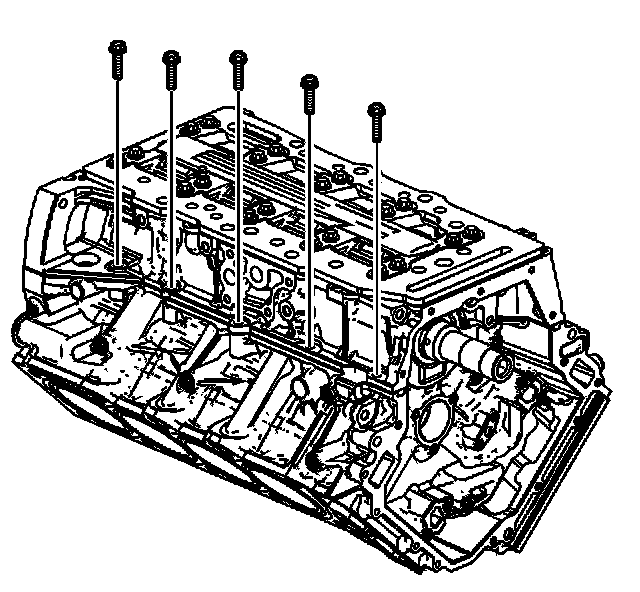
13. Install the left side upper-to-lower crankcase perimeter bolts.
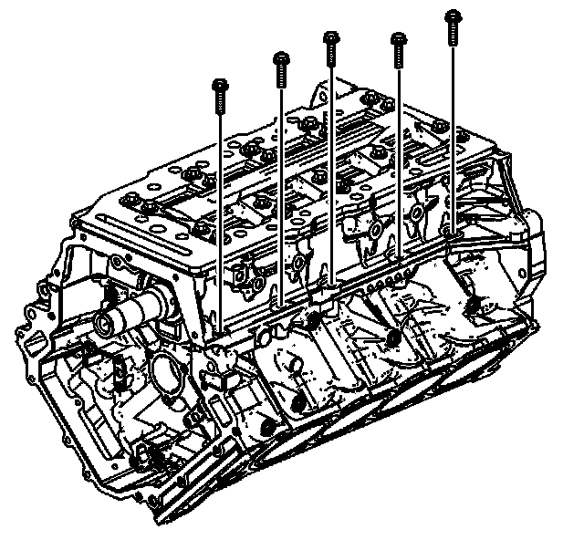
14. Install the right side upper-to-lower crankcase perimeter bolts.
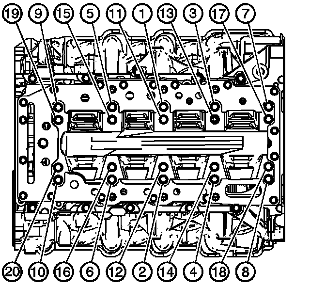
15. Install the lower crankcase main bearing bolts.
1. First Pass
Tighten the lower crankcase main bearing bolts (1-20) to 20 N.m (15 lb ft) in the proper sequence.
2. Final Pass
Tighten the lower crankcase main bearing bolts (1-20) an additional 65 degrees in the proper sequence using the J 45059 .
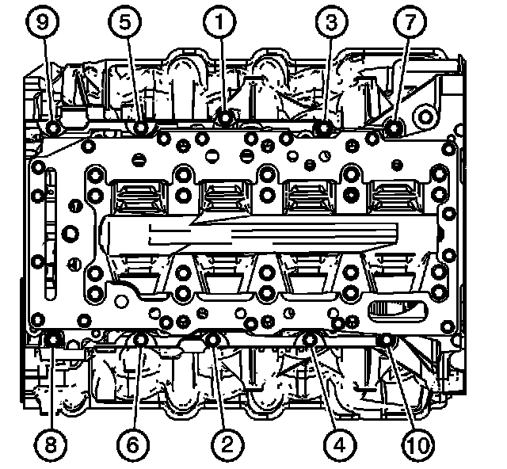
16. Tighten the upper-to-lower crankcase perimeter bolts (1-10).
Tighten the upper-to-lower crankcase perimeter bolts (1-10) to 30 N.m (22 lb ft) in the proper sequence.
17. Using the J 39946 rotate the crankshaft until the crankshaft journal and the connecting rod to be measured is in the 12 o'clock position.
Important: The crankshaft must be secure with no movement or rotation in order to obtain an accurate reading.
18. Remove the crankshaft main bolts required to install the retainer plate J 43690-105.
19. Install the J 43690-105 retainer plate and crankshaft main bolts. Refer to Lower Crankcase Installation (Overhaul) for tightening specifications.
Important: Do not allow the J 43690-105 retainer plate screw to contact the reluctor ring.
20. Tighten the J 43690-105 retainer plate screw until snug in order to secure the crankshaft movement.
21. Install the foot and bolt to the J 43690-101 pivot arm assembly. Tighten the bolt until snug.
22. Install the J 43690-101 pivot arm assembly onto the connecting rod and tighten the screw securely.
23. Install the base and bolt to the oil pan rail.
24. Align the center of the base with the screw of the J 43690-101 pivot arm assembly. Tighten the bolt until snug.
25. Align the link of the J 43690-101 pivot arm assembly on a plane equal to that of the connecting rod beam.
26. Insert the pin to the base and J 43690-101 pivot arm assembly.
27. Select the adapter as required and install to the swivel base. Tighten until snug.
28. Install the swivel base to the oil pan rail.
Important: The clamp of the swivel base and the shaft of the indicator should be free of oil or other debris. A loose or improperly clamped indicator may indicate incorrect readings.
29. Install the indicator to the swivel base. Tighten the clamp of the base until snug.
Important: The tip of the indicator should be positioned above and NOT in contact with the end of the connecting rod.
30. Adjust the swivel base as required and position the indicator tip slightly above the connecting rod cap. Lock the swivel base in position by rotating the locking lever.
31. Rotate the fine adjustment knobs on the dial indicator end of the swivel base in order to position the tip of the indicator in contact with the connecting rod.
32. Lightly actuate the handle of the pivot arm assembly, multiple times in both directions, to ensure the oil film is removed from the connecting rod.
33. Load the handle in the forward position and zero the dial indicator. Load the handle multiple times in both directions and record the readings.
34. Refer to Fastener Tightening Specifications (Specifications) for proper clearances.
35. Remove the J 43690-105 retainer plate.
36. Install the crankshaft main bolts. Refer to Lower Crankcase Installation (Overhaul) for tightening specifications.
37. Reposition the tools and repeat steps 2-21 for all other connecting rods.
38. If clearances do not meet specifications, replace components as required.
39. Remove the lower crankcase when the procedure is complete.
Connecting Rod Final Assembly Procedure
1. Remove the connecting rod bolts.
2. Remove the connecting rod cap.
3. Install the EN 46121 into the connecting rod bolt holes.
4. Back the connecting rod away from the crankshaft in order to allow for lubricant application.
5. Coat the crankshaft connecting rod bearing journal and installed connecting rod bearings with GM crankshaft prelube GM P/N 1052367, (Canadian P/N 992869), or equivalent.
6. Guide the connecting rod onto the crankshaft connecting rod bearing journal.
7. Remove the EN 46121 from the connecting rod bolt holes.
8. Install the connecting rod end cap on its original connecting rod making sure the bearing lock tangs are aligned on the same side of the rod.
9. When properly installed, the connecting rod bearing cap notches should be paired, as shown, on the crankpin.
Notice: Refer to Fastener Notice (Fastener Notice) .
Important: DO NOT reuse the old connecting rod bolts.
10. Lubricate the NEW connecting rod bolts with engine oil and install in the connecting rod.
Tighten the NEW connecting rod bolts to 30 N.m (22 lb ft).
11. Loosen the connecting rod bolts until the torque reading is zero.
12. Re-tighten the connecting rod bolts.
1. First Pass
Tighten the connecting rod bolts to 25 N.m (18 lb ft).
2. Final Pass
Tighten the connecting rod bolts an additional 110 degrees using the J 45059 .
13. During and after installation, ensure each piston is positioned properly in the correct cylinder.
14. Repeat these procedures for the piston/connecting rod assembly that is using the common crankshaft connecting rod journal.
15. Measure the connecting rod side clearance between the 2 connecting rods that share the common crankshaft connecting rod journal.
16. Compare the measurements with the engine mechanical specifications. Refer to Engine Mechanical Specifications (Specifications) .
17. If the connecting rods do not provide the proper crankshaft side clearance inspect for the following conditions:
* If the clearance is too tight, ensure the connecting rods are not binding and can slide parallel to the crankpin. Re-measure the connecting rod widths for the correct specified size. If the connecting rods are incorrectly sized, replace the connecting rods.
* If the clearance is too loose, re-measure the connecting rod widths for the correct specified size. If the connecting rods are incorrectly sized, replace the connecting rods.
18. Repeat these procedures for the remaining piston/connecting rod assemblies using the J 39946 in order to rotate the crankshaft.